MENU
価格は税込の仮設定です。カテゴリで絞り込めます。
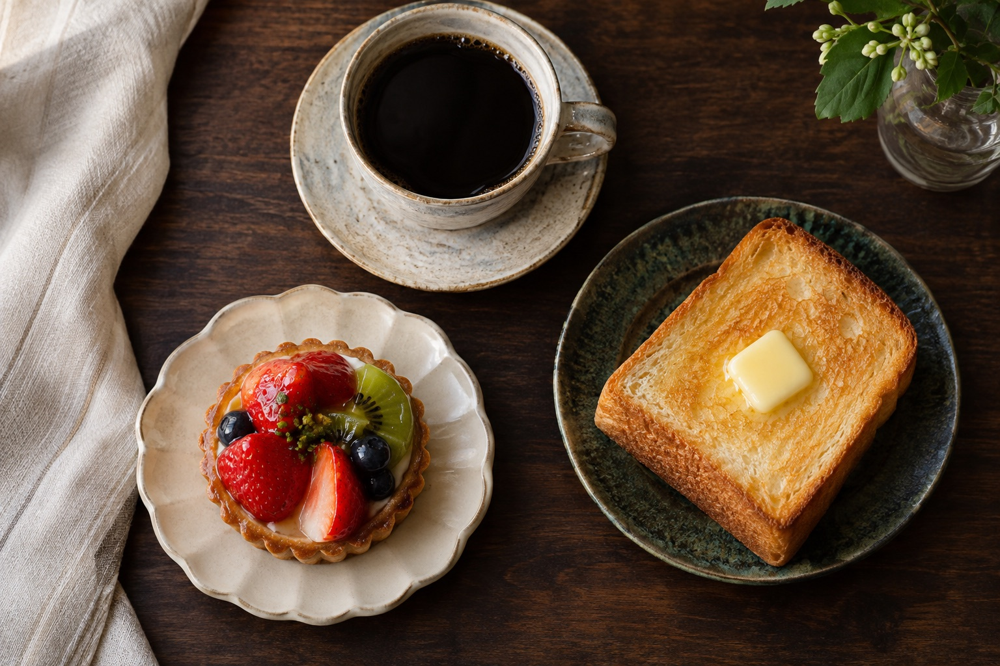
COFFEE, TOAST & SWEETSどの時間にも、ちょうどいい一皿を。
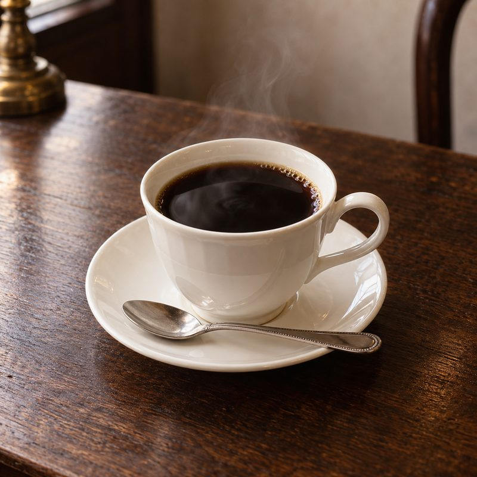
HOUSE BLEND
深煎りで、まろやかな余韻。ネルドリップで一杯ずつ。
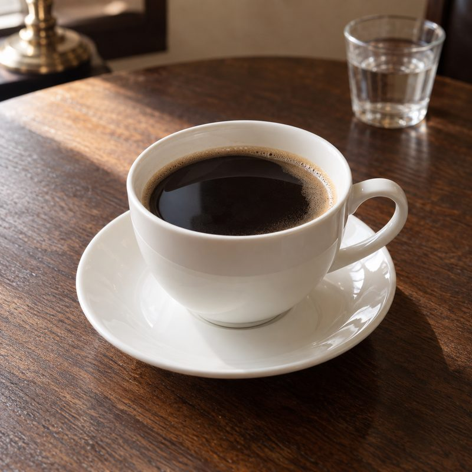
AMERICANO
すっきり軽やか。読書のおともに。
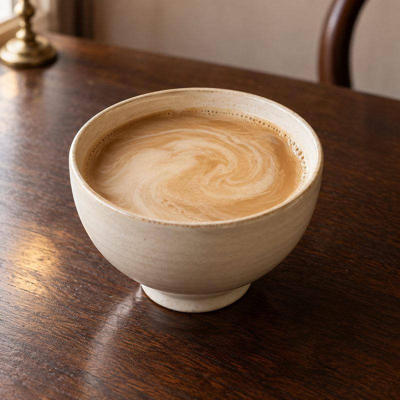
CAFÉ AU LAIT
たっぷりのミルクで、やさしい甘み。
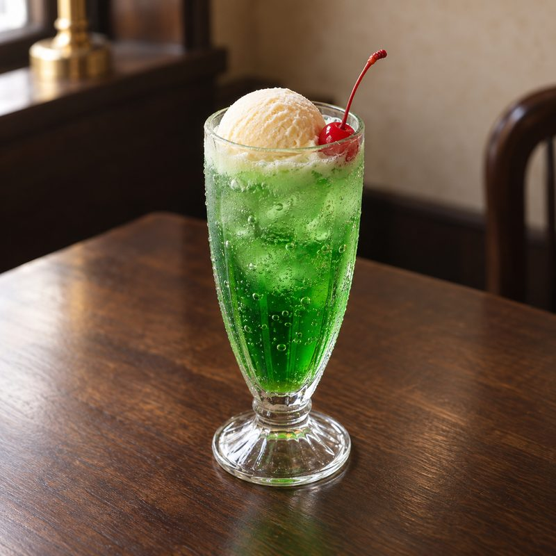
CREAM SODA
メロン色のソーダに、バニラアイスとさくらんぼ。
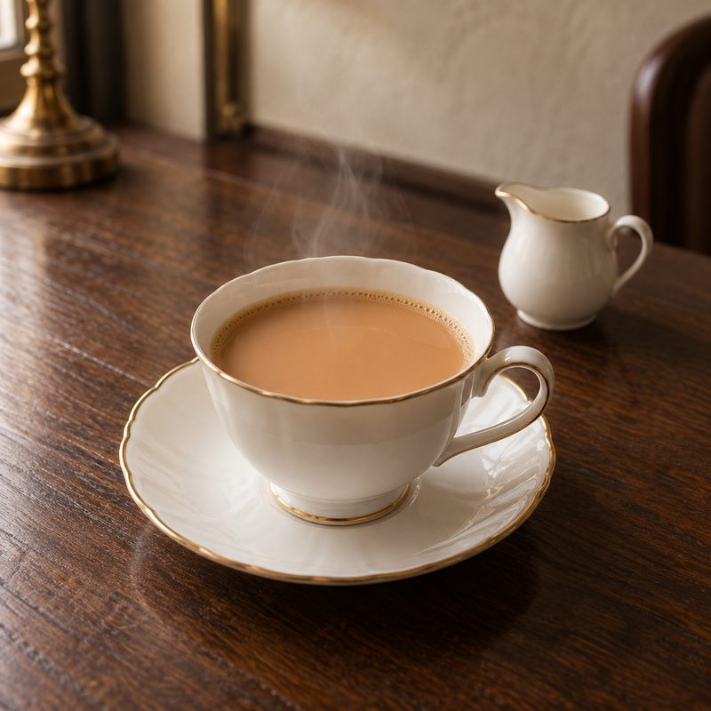
MILK TEA
茶葉をミルクで煮出した、まろやかな一杯。
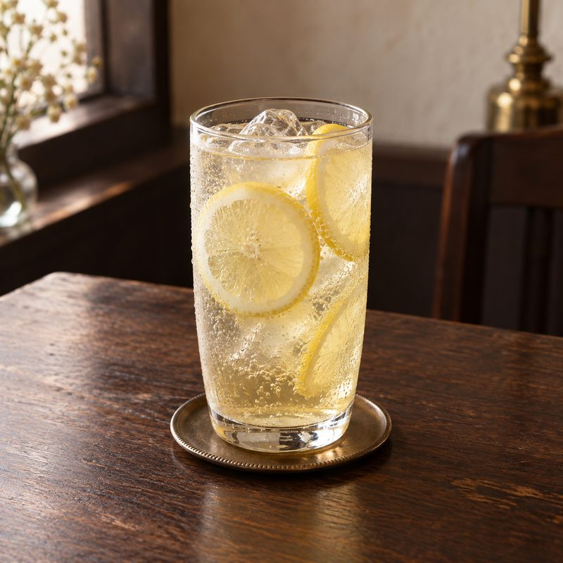
LEMON SQUASH
生レモンをしぼって。午後のリフレッシュに。
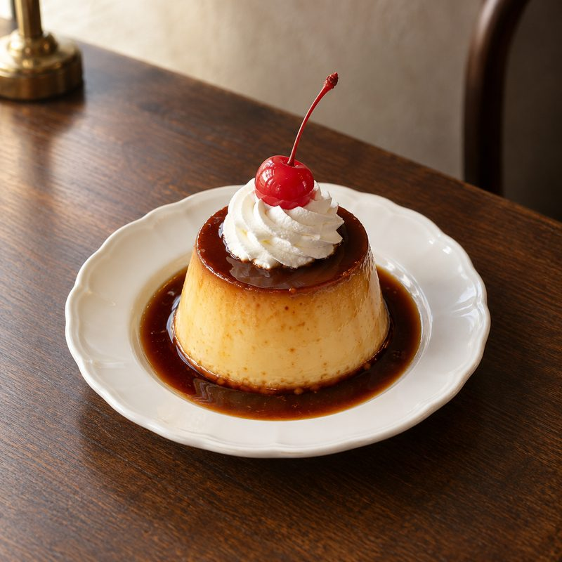
PUDDING
昔ながらの、しっかり固め。ほろ苦いカラメルと。
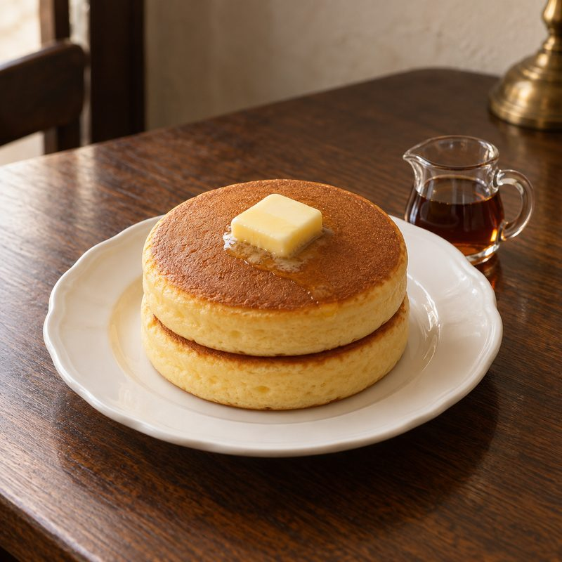
HOT CAKE
銅板でじっくり。バターとメープルをたっぷり。
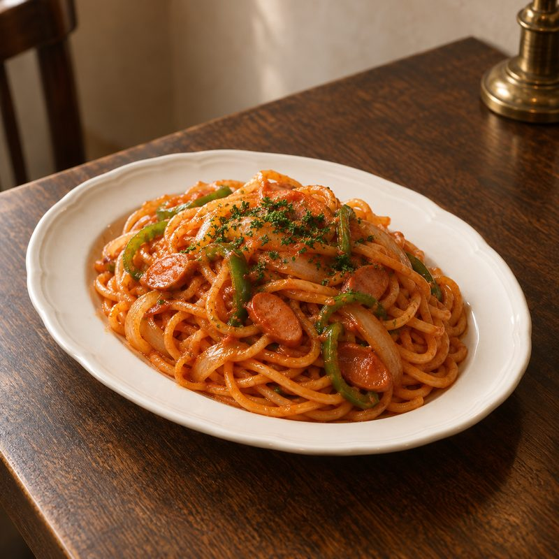
NAPOLITAN
太めの麺にケチャップをからめた、喫茶の定番。
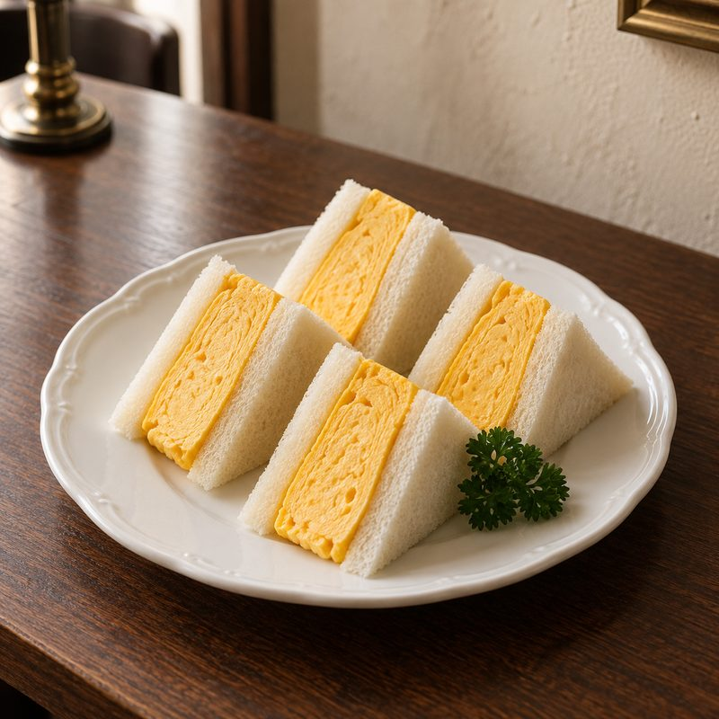
EGG SANDWICH
ふわふわの厚焼きたまご。持ち帰りも。
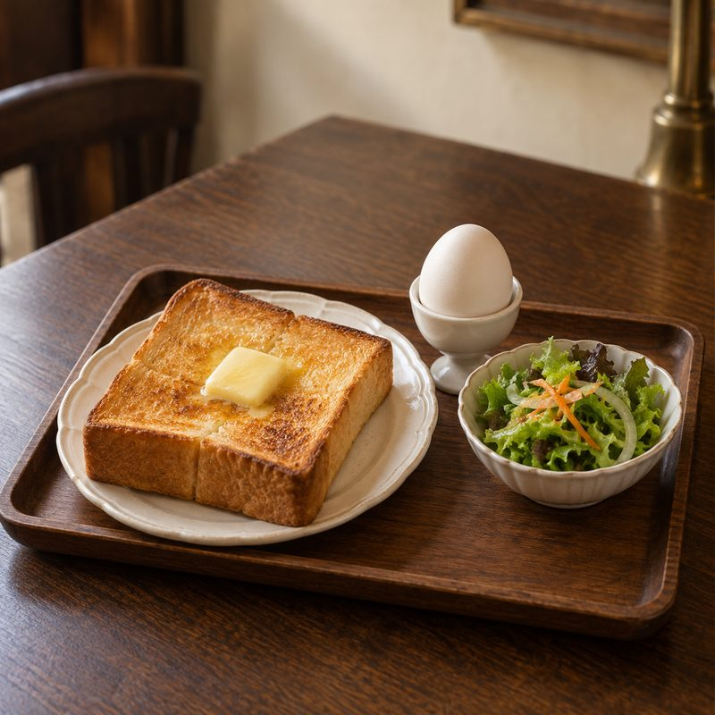
MORNING SET
厚切りトースト・ゆでたまご・小さなサラダ。ドリンク代＋¥150。8:00–11:00。
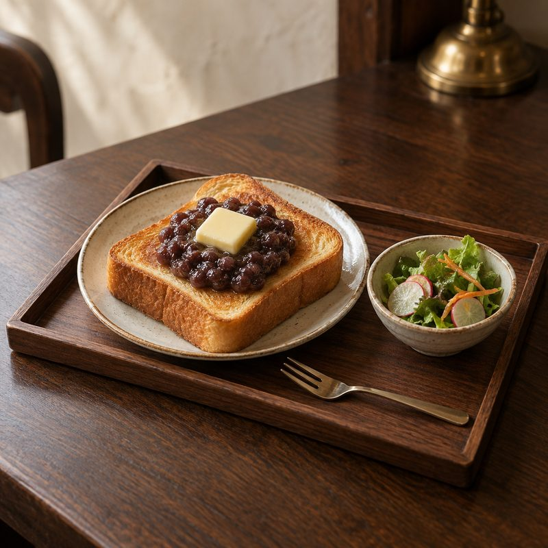
SWEET MORNING
つぶあんとバターの厚切りトースト。ドリンク代＋¥200。
モーニングは 8:00–11:00〈仮〉。ドリンク代に＋¥150〜でお付けします。
【要確認】原材料・アレルゲン・持ち帰り可否・季節メニューの有無は、実際の運用に合わせて掲載します。
OPEN DAILY — 8:00 – 19:00〈仮〉
モーニングから、夕方の一杯まで。どうぞ、ゆっくりしていってください。